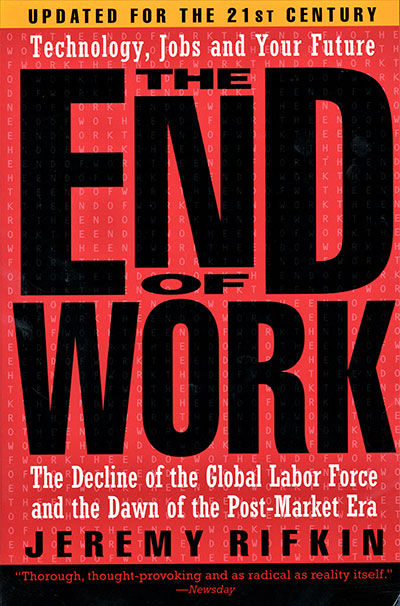

Desemprego típico: 4% - 6%
Exemplos:
Desemprego típico: 6% - 10%, maior variação
Exemplos:
Os desalentados são pessoas que gostariam de trabalhar e estariam disponíveis, porém não procuraram trabalho por acharem que não encontrariam.
The End of Work: The Decline of the Global Labor Force and the Dawn of the Post-Market Era,
Jeremy Rifkin, 1995

Ao escalar soluções, uma parte do lucro retornaria para iniciativa.
Ao escalar soluções, uma parte do lucro retornaria para iniciativa.
O crescimento da solução, cresce proporcional ao sucesso da solução. \[\frac{d B}{d t}\propto B\quad\implies\quad \frac{dB}{dt}=k B\]
Ao escalar soluções, uma parte do lucro retornaria para iniciativa.
O crescimento da solução, cresce proporcional ao sucesso da solução. \[\frac{d B}{d t}\propto B\quad\implies\quad \frac{dB}{dt}=k B\]
Solução com comportamento exponencial: \(\therefore B=C e^{k t}\)
Proposta para os desalentados:
Primeiros passos:
Primeiros passos:
Uma iniciativa, com propósito de abraçar uma uberização inteligente.